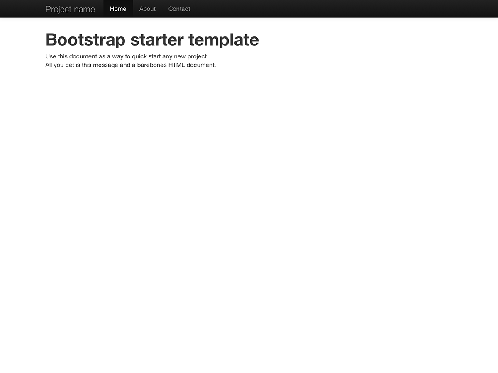

1. 下载
下载之前先检查一下是否准备好了一个代码编辑器(我们推荐使用 Sublime Text 2) ，你是否已经掌握了足够的HTML和CSS知识以开展工作。这里我们不详述源码文件，但是它们可以随时被下载。在这里我们只着重介绍使用已经编译好的Bootstrap文件进行入门讲解。
2. 文件结构
在下载的压缩包中你可以看到如下的文件结构和内容。所有文件按逻辑进行分类存储，并且提供了编译和压缩两个版本的文件。
将下载的文件解压缩之后就可以看到如下的文件结构：
bootstrap/
├── css/
│ ├── bootstrap.css
│ ├── bootstrap.min.css
├── js/
│ ├── bootstrap.js
│ ├── bootstrap.min.js
└── img/
├── glyphicons-halflings.png
└── glyphicons-halflings-white.png
这就是Bootstrap的基本结构：编译后的文件可以快速应用于任何web项目。我们提供了编译版的CSS和JS文件 (bootstrap.*)，也同时提供了编译并压缩之后的CSS和JS文件 (bootstrap.min.*)。图片文件是使用 ImageOptim 工具进行压缩的，这个工具是Mac平台上用于压缩PNG文件的一个app。
请注意，所有的JavaScript插件都依赖jQuery库。
3. 包含了哪些东西
Bootstrap中的HTML、CSS和JS适用于各类设备, 不过它们可以被概括成几个类别，请看本文档顶部的导航条。
文档章节
脚手架
全局性的样式文件，用于重置背景、链接样式、栅格系统等，并包含两个简单的布局结构。
基本CSS样式
常见的HTML元素 -- 如排版、代码、表格、表单、和按钮的样式。还包括 Glyphicons, 一个非常棒的图标集。
组件
常见界面组件 -- 如标签、pill、导航、警告、页面标题的基本样式。
JavaScript插件
和组件类似，这些Javascript插件用来实现提示(tooltip)、弹出框(popover)、模态对话框(modal)等具有交互性的组件。
组件列表
组件库 和 JavaScript插件集 一同提供了以下组件元素。
- 按钮组
- 按钮下拉菜单
- 用于导航的标签、pill、列表
- 导航条
- Labels
- Badges
- Page headers and hero unit
- 缩略图
- 警告对话框
- 进度条
- 模态对话框(Modals)
- 下拉菜单(Dropdowns)
- Tooltips
- Popovers
- Accordion
- Carousel
- Typeahead
在后面的文档中, 我们会挨个详细的介绍这些组件的细节。在此之前, 先来看看如何使用并定制它们。
4. 基本的HTML模版
为了把注意力完全放到使用Bootstrap上，我们先做一点儿课前准备。为了做到这一点，我们将利用一个基本的HTML模板, 其中包括我们在文件结构一章中提到的所有内容。
现在, 这里展示一个典型的HTML文件：
<!DOCTYPE html>
<html>
<head>
<title>Bootstrap 101 Template</title>
<meta name="viewport" content="width=device-width, initial-scale=1.0">
</head>
<body>
<h1>Hello, world!</h1>
<script src="http://code.jquery.com/jquery.js"></script>
</body>
</html>
为了使其成为一个Bootstrap模板, 需要包含相应的 CSS and JS 文件：
<!DOCTYPE html>
<html>
<head>
<title>Bootstrap 101 Template</title>
<meta name="viewport" content="width=device-width, initial-scale=1.0">
<!-- Bootstrap -->
<link href="css/bootstrap.min.css" rel="stylesheet" media="screen">
</head>
<body>
<h1>Hello, world!</h1>
<script src="http://code.jquery.com/jquery.js"></script>
<script src="js/bootstrap.min.js"></script>
</body>
</html>
设置成功! 加入这两个文件, 你就可以开始用Bootstrap开发任何网站和应用程序了。
5. 案例
希望下面的几个案例能引导大家在基础模版的基础上做发散性思维。我们鼓励大家参考下面的案例举一反三，而不要仅仅是机械式的照抄。
-

最简模版
一个包含了Bootstrap的所有CSS和JavaScript文件的最简HTML文档。
-

基本的营销类网站
具有一个主消息板块和三个辅助性元素。
-

流式布局
使用新的响应式布局, 流式栅格系统建立的一个流式布局。
-

精简版的营销类网站
适用于小项目或团队的简单、轻量级的营销类模板。
-

两端对齐的导航条
带有等宽的导航链接的市场营销类页面，导航条在原始样式的基础上进行了修改。
-
登录框
基本的登录表单，使用到了自定义的较大的表单组件和灵活的布局。
-

页脚固定在底部
将固定高度的页脚钉在页面可视区域的最下方。
-

大屏轮播
一个更具交互、突出轮播的基本营销类网站。
下一步？
根据文档顶部的分类查看更多案例、代码片段, 或定制Bootstrap，为你即将开展的项目做一次彻底改变。
查看 Bootstrap 文档 定制 Bootstrap